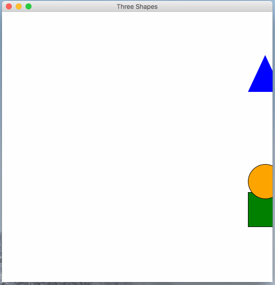

In this programming assignment, you should create a program that behaves similarly to the gif shown in this spec. Follow the below requirements.
three.py.All of the graphics should be displayed using the graphics.py module.
Remember to put graphics.py in the same directory as three.py while working on the PA.
You can refer to the slides from section if you forgot how to work with the graphics module.
This program does not need to take any input values from the command-line, and does not need to print anything on the command-line either.
Also, there will be not autograder tests on Gradescope for this. The SLs will grade submissions by trying to run your programs. Thus, you should be careful to make sure your program behaves very similar to the examples that are shown on this spec.
This program must follow the style guidelines.
You should structure all of the code into one or more functions.
If within the style guidelines, you may put all of the code into main.
The only code that is allowed to not be in a function are your import statements and a call to main().
This PA is due on Wednesday, October 3th, at 4pm.
You should turn it in on Gradescope.
You do not need to turn in graphics.py, only three.py.
Remember: there are not going to be autograder test cases, so do the best you can to match the correct behavior described and shown in the spec.